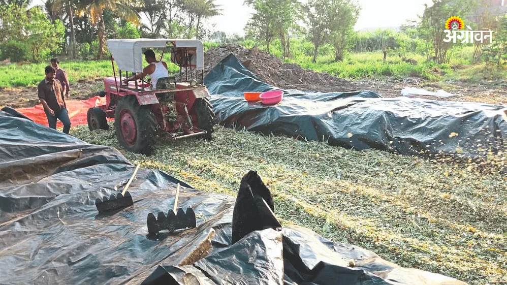
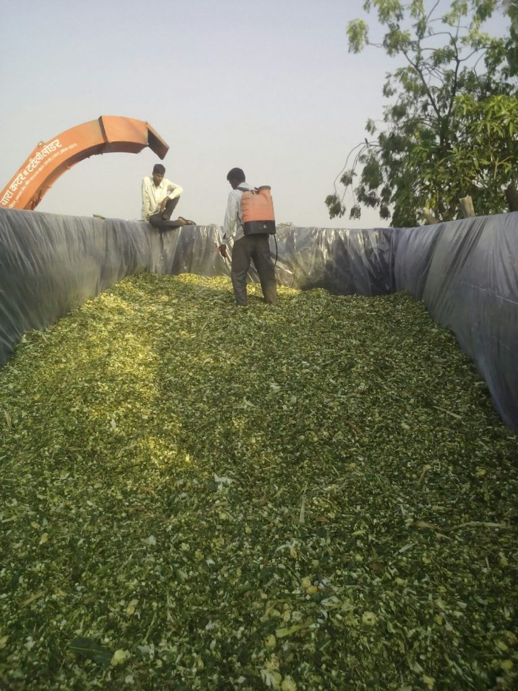

Murghas Factory
Murghas is fodder that has been fermented (fermented) in an airtight container. In this method, lactic acid is produced from sugars in green vegetables by microorganisms living in an anaerobic environment.
मुरघास म्हणजे हवा विरहित जागेत किण्वनीकरण (आंबवून) करून साठवलेला चारा होय. या पद्धतीत हवा विरहित अवस्थेमध्ये जगणाऱ्या सूक्ष्म जीवाणूंमुळे हिरव्या वैरणीत असलेल्या साखरेपासून लॅक्टिक आम्ल तयार होतो.
Preparation of Murghas(मुरघास तयार करण्याची पद्धत)
- चारापिके ५० टक्के फुलोऱ्यात असताना कडबाकुट्टी यंत्राने लहान तुकडे करतात.
- एकदलवर्गीय पिकापासून आणि द्विदल वर्गीय पिकापासून मुरघास बनविताना ४:१ प्रमाण घेतात. याचा रुचकर मुरघास बनतो.
- एकदलवर्गीय पिकापासून मुरघास बनवितेवेळी एक किलो युरिया १०० लिटर पाण्यात मिसळून हे मिश्रण चाराकुट्टीवर शिंपडतात. द्विदलवर्गीय पिकापासून मुरघास बनविताना त्यावर गूळ द्रावणाचे मिश्रण शिंपडतात.
त्यासाठी एक किलो गूळ १०० लिटर पाण्यात विरघळवून द्रावण तयार केले जाते.
- अशा प्रकारची कुट्टी तयार करून खड्ड्यात एक फुटापर्यंत थर येईल अशा पद्धतीने भरतात. प्रत्येक थरानंतर वर सांगितलेले द्रावण शिंपडतात.
- चाराकुट्टीचा थर खड्ड्यात भरताना दाब देतात, त्यामुळे चाऱ्यामध्ये हवा राहत नाही. अशा पद्धतीने थरावर थर देत जाऊन खड्डा भरतात. त्यावर वाळलेले गवत किंवा कडबा यांच्या मदतीने आच्छादन करतात.
- शेण व मातीच्या मिश्रणाने नंतर लिंपून गोलघुमटासारखा आकार देतात.
- साधारण दोन महिन्यांनी चांगला, स्वादिस्ट, रुचकर असा पौष्टिक मुरघास तयार होतो.
Key Features(महत्वाची वैशिष्टे)
Tough & Durable.
Dust & Dirt Proof.
Light Weight & Easy to Handle.
Water Resistant & Anti-Insect Netting.
Recyclable, UV Protected, Waterproof, Tear Resistant & Strong Aluminium Eyelet.
कठीण आणि टिकाऊ.
धूळ आणि घाण रोधक.
हलके वजन आणि हाताळण्यास सोपे.
पाणी प्रतिरोधक आणि विरोधी कीटक जाळी.
पुनर्वापर करण्यायोग्य, अतिनील संरक्षित, जलरोधक, अश्रू प्रतिरोधक आणि मजबूत अॅल्युमिनियम आयलेट.
Why should the Murghas?(मुरघास का करावा ?)
Murghas is the only storage method that preserves complete, edible animal feed.
(मुरघास हा जनावरांचा पूर्ण चारा, खाण्यास योग्य ठेवणारी एकमेव साठवण पद्धत आहे.)
बांधकामातील मुरघास
३ बाजुंनी भिंत बांधून मोठ्या प्रमाणात बांधकामातील मुरघास करता येतो.

खड्ड्यातील मुरघास
तुमच्या शेतात खड्डा करून तुमचा चारा पुरून ठेवू शकता.
